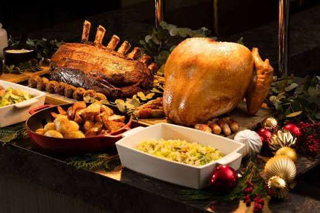

15 Five-Ingredient Dinners Ready in 20 Minutes

After work, the last thing you want is a 12-ingredient recipe and 1 hour of cooking. If you can count to 5 and set a timer for 20, you can get dinner on the table. These five ingredient dinners are perfect for busy weeknights when you want something fast, tasty, and no-fuss.
15 Five-Ingredient Dinner Recipes
1. Honey Garlic Chicken & Rice
Prep: 5 min | Cook: 15 min | Total: 20 min
Chicken thighs, soy sauce, honey, garlic, rice. Sear chicken, glaze, serve over rice.
2. Caprese Chicken Skillet
Prep: 5 min | Cook: 15 min | Total: 20 min
Chicken breast, tomatoes, mozzarella, basil, balsamic glaze.
3. BBQ Chicken Quesadillas
Prep: 5 min | Cook: 10 min | Total: 15 min
Cooked chicken, BBQ sauce, cheddar, tortillas, red onion.
4. Pesto Chicken & Pasta
Prep: 5 min | Cook: 15 min | Total: 20 min
Chicken, pasta, pesto, cherry tomatoes, parmesan.
5. 15-Minute Garlic Butter Salmon & Broccoli
Prep: 5 min | Cook: 10 min | Total: 15 min
Salmon fillets, broccoli, butter, garlic, lemon.
6. Lemon Garlic Shrimp Pasta
Prep: 5 min | Cook: 15 min | Total: 20 min
Shrimp, pasta, butter, garlic, lemon.
7. Shrimp Taco Bowls
Prep: 5 min | Cook: 10 min | Total: 15 min
Shrimp, taco seasoning, rice, black beans, lime.
8. Beef Stir Fry & Bell Peppers
Prep: 5 min | Cook: 15 min | Total: 20 min
Beef strips, bell peppers, soy sauce, garlic, rice noodles.
9. Spicy Sausage & Peppers
Prep: 5 min | Cook: 15 min | Total: 20 min
Italian sausage, bell peppers, onion, olive oil, hoagie rolls.
10. Turkey Taco Skillet
Prep: 5 min | Cook: 15 min | Total: 20 min
Ground turkey, taco seasoning, black beans, corn, cheese.
11. Chickpea Curry in 20 Minutes
Prep: 5 min | Cook: 15 min | Total: 20 min
Canned chickpeas, coconut milk, curry paste, spinach, rice.
12. Teriyaki Tofu & Broccoli
Prep: 5 min | Cook: 15 min | Total: 20 min
Tofu, broccoli, teriyaki sauce, rice, sesame oil.
13. Tomato Basil Pasta
Prep: 5 min | Cook: 15 min | Total: 20 min
Pasta, canned tomatoes, garlic, parmesan, basil.
14. Egg Fried Rice
Prep: 5 min | Cook: 10 min | Total: 15 min
Cooked rice, eggs, soy sauce, peas, green onion.
15. Mediterranean Chickpea Salad Wrap
Prep: 10 min | Cook: 0 min | Total: 10 min
Chickpeas, cucumber, feta, tzatziki, tortillas.
Get My Free 5-Ingredient Shopping List PDF 🛒
Download all 15 recipes + complete grocery list
Download Free Now